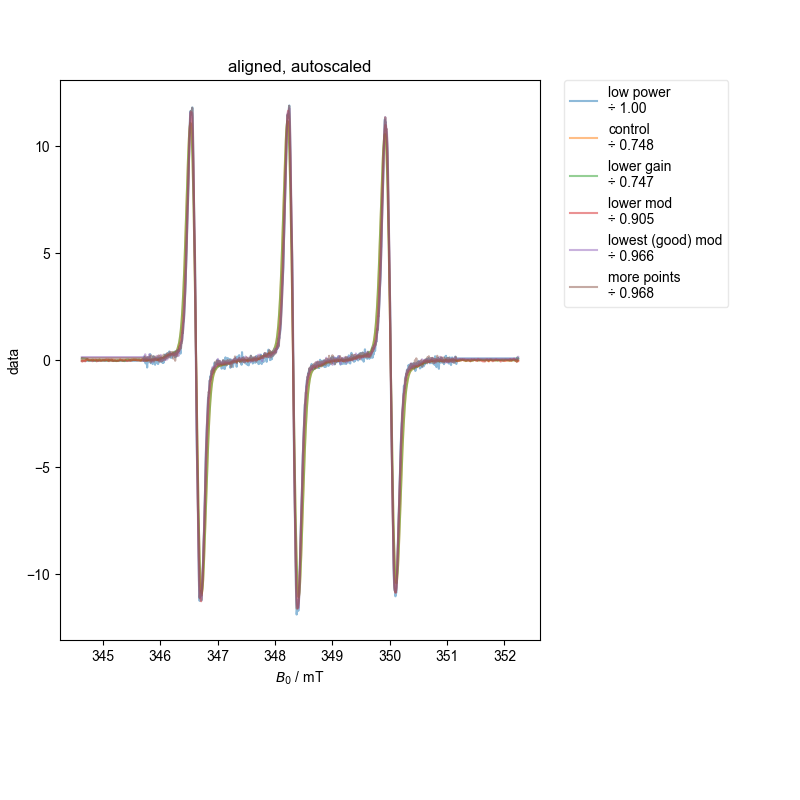

Note
Go to the end to download the full example code
QESR of same sample¶
Here, we sit and acquire the same sample with different acquisition parameters, and make sure we get the same QESR.
We do this b/c the data is not stored by XEPR in a way that we would expect.
Note that some of these datasets are not great b/c we didn’t capture enough of the baseline to either side (and we see here why this is a problem). However, both with the single integral (absorption) plot and more precisely with the ESR alignment we conduct at the end, we see that we have properly scaled the spectra.
See the QESR.py example for information about setting your pyspecdata config so that this works correctly!
- 
122.54129577330296 µM
122.63159081503636 µM
121.01885133606305 µM
85.85711532617417 µM
103.46665273851991 µM
123.48150086226747 µM
1: Raw and unscaled |||kG
2: baseline diagnostic
{'print_string': '\\par'}
{'width': 0.9}
3: absorption, bg. no bl. |||G
{'print_string': "\\textbf{\\texttt{array([-0.66800288, -0.65361027, -0.64696326, ..., -0.63123704,\n -0.6245511 , -0.62821853], dtype='>f8')\n\tdimlabels=['$B_0$']\n\taxes={`$B_0$':array([3446.35 , 3446.42431641, 3446.49863281, ..., 3522.22705119,\n 3522.30136759, 3522.375684 ])\n\t\t\t+/-None}\n}}\\par"}
{'print_string': '\\par'}
{'print_string': "\\textbf{\\texttt{array([-0.84621271, -0.84798547, -0.85663472, ..., -0.92580633,\n -0.93721423, -0.94834255], dtype='>f8')\n\tdimlabels=['$B_0$']\n\taxes={`$B_0$':array([3446.35 , 3446.42431641, 3446.49863281, ..., 3522.22705119,\n 3522.30136759, 3522.375684 ])\n\t\t\t+/-None}\n}}\\par"}
{'print_string': '\\par'}
{'print_string': "\\textbf{\\texttt{array([-0.65345155, -0.66422002, -0.668981 , ..., -0.66078097,\n -0.66666975, -0.68187683], dtype='>f8')\n\tdimlabels=['$B_0$']\n\taxes={`$B_0$':array([3446.35 , 3446.42431641, 3446.49863281, ..., 3522.22705119,\n 3522.30136759, 3522.375684 ])\n\t\t\t+/-None}\n}}\\par"}
{'print_string': '\\par'}
{'print_string': "\\textbf{\\texttt{array([-0.14620168, -0.15906198, -0.16895391, ..., -0.15180505,\n -0.15562279, -0.15686577], dtype='>f8')\n\tdimlabels=['$B_0$']\n\taxes={`$B_0$':array([3457.1 , 3457.15332031, 3457.20664063, ..., 3511.54003937,\n 3511.59335969, 3511.64668 ])\n\t\t\t+/-None}\n}}\\par"}
{'print_string': '\\par'}
{'print_string': "\\textbf{\\texttt{array([-0.15020269, -0.15608694, -0.16756175, ..., -0.16405414,\n -0.16407345, -0.15961655], dtype='>f8')\n\tdimlabels=['$B_0$']\n\taxes={`$B_0$':array([3457.1 , 3457.12666016, 3457.15332031, ..., 3511.62001969,\n 3511.64667984, 3511.67334 ])\n\t\t\t+/-None}\n}}\\par"}
{'print_string': '\\par'}
{'print_string': "\\textbf{\\texttt{array([-0.15980043, -0.15991529, -0.14795795, ..., -0.17369751,\n -0.16198296, -0.14956213], dtype='>f8')\n\tdimlabels=['$B_0$']\n\taxes={`$B_0$':array([3457.1 , 3457.12666016, 3457.15332031, ..., 3511.62001969,\n 3511.64667984, 3511.67334 ])\n\t\t\t+/-None}\n}}\\par"}
{'print_string': '\\par'}
4: Raw |||mT
5: correlation |||mT
6: find center |||mT
7: before centering -- ift |||kcyc · (T)$^{-1}$
8: after centering -- ift |||kcyc · (T)$^{-1}$
9: aligned, autoscaled |||mT
{'width': 0.98}
10: centered spectra
\par
\textbf{\texttt{array([-0.66800288, -0.65361027, -0.64696326, ..., -0.63123704,
-0.6245511 , -0.62821853], dtype='>f8')
dimlabels=['$B_0$']
axes={`$B_0$':array([3446.35 , 3446.42431641, 3446.49863281, ..., 3522.22705119,
3522.30136759, 3522.375684 ])
+/-None}
}}\par
\par
\textbf{\texttt{array([-0.84621271, -0.84798547, -0.85663472, ..., -0.92580633,
-0.93721423, -0.94834255], dtype='>f8')
dimlabels=['$B_0$']
axes={`$B_0$':array([3446.35 , 3446.42431641, 3446.49863281, ..., 3522.22705119,
3522.30136759, 3522.375684 ])
+/-None}
}}\par
\par
\textbf{\texttt{array([-0.65345155, -0.66422002, -0.668981 , ..., -0.66078097,
-0.66666975, -0.68187683], dtype='>f8')
dimlabels=['$B_0$']
axes={`$B_0$':array([3446.35 , 3446.42431641, 3446.49863281, ..., 3522.22705119,
3522.30136759, 3522.375684 ])
+/-None}
}}\par
\par
\textbf{\texttt{array([-0.14620168, -0.15906198, -0.16895391, ..., -0.15180505,
-0.15562279, -0.15686577], dtype='>f8')
dimlabels=['$B_0$']
axes={`$B_0$':array([3457.1 , 3457.15332031, 3457.20664063, ..., 3511.54003937,
3511.59335969, 3511.64668 ])
+/-None}
}}\par
\par
\textbf{\texttt{array([-0.15020269, -0.15608694, -0.16756175, ..., -0.16405414,
-0.16407345, -0.15961655], dtype='>f8')
dimlabels=['$B_0$']
axes={`$B_0$':array([3457.1 , 3457.12666016, 3457.15332031, ..., 3511.62001969,
3511.64667984, 3511.67334 ])
+/-None}
}}\par
\par
\textbf{\texttt{array([-0.15980043, -0.15991529, -0.14795795, ..., -0.17369751,
-0.16198296, -0.14956213], dtype='>f8')
dimlabels=['$B_0$']
axes={`$B_0$':array([3457.1 , 3457.12666016, 3457.15332031, ..., 3511.62001969,
3511.64667984, 3511.67334 ])
+/-None}
}}\par
\par
/home/jmfranck/git_repos/pyspecdata/pyspecdata/figlist.py:772: UserWarning: This figure includes Axes that are not compatible with tight_layout, so results might be incorrect.
plt.gcf().tight_layout()
from matplotlib.pyplot import title
from pyspecdata import find_file, figlist_var
from pyspecProcScripts import QESR, align_esr
from collections import OrderedDict
fieldaxis = "$B_0$"
plot_rescaled = False
water_nddata = find_file("230511_water.DSC", exp_type="francklab_esr/romana")[
"harmonic", 0
]
d = OrderedDict()
for file_searchstring, thislabel, exp_type in [
("250321_OHT_control", "control", "francklab_esr/Warren"),
("250321_OHT_gaindown", "lower gain", "francklab_esr/Warren"),
("250321_OHT_moddown", "lower mod", "francklab_esr/Warren"),
(
"250321_OHT_followmodrule",
"lowest (good) mod",
"francklab_esr/Warren",
),
("250321_OHT_morepoint", "more points", "francklab_esr/Warren"),
("250321_OHT_lowpower", "low power", "francklab_esr/Warren"),
]:
d[thislabel] = find_file(file_searchstring, exp_type=exp_type).chunk_auto(
"harmonic"
)["harmonic", 0]["phase", 0]
with figlist_var() as fl:
fl.next("Raw and unscaled")
for k, v in d.items():
fl.plot(v, label=k, alpha=0.7)
for k, v in d.items():
c = QESR(
v,
label=k,
fl=fl,
)
print(f"{c:~P}")
d = align_esr(d, fl=fl)
title(
"This plot shows we know how to scale the amplitude\n"
"correctly for a range of different experimental parameters"
)
Total running time of the script: (0 minutes 5.881 seconds)